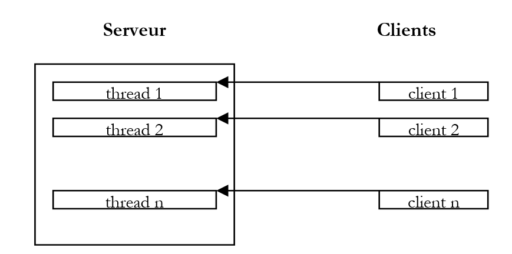
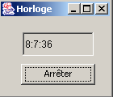
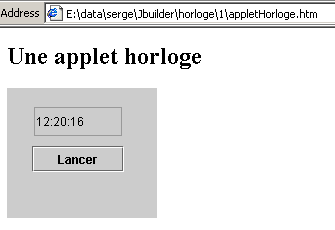

7. Les Threads d'exécution
7.1. Introduction
Lorsqu'on lance une application, elle s'exécute dans un flux d'exécution appelé un thread. La classe modélisant un thread est la classe java.lang.Thread dont voici quelques propriétés et méthodes :
|
donne le thread actuellement en cours d'exécution |
|
fixe le nom du thread |
|
nom du thread |
|
indique si le thread est actif(true) ou non (false) |
|
lance l'exécution d'un thread |
|
méthode exécutée automatiquement après que la méthode start précédente ait été exécutée |
|
arrête l'exécution d'un thread pendant n millisecondes |
|
opération bloquante - attend la fin du thread pour passer à l'instruction suivante |
Les constructeurs les plus couramment utilisés sont les suivants :
|
crée une référence sur une tâche asynchrone. Celle-ci est encore inactive. La tâche créée doit posséder la méthode run : ce sera le plus souvent une classe dérivée de Thread qui sera utilisée. |
|
idem mais c'est l'objet Runnable passé en paramètre qui implémente la méthode run. |
Regardons une première application mettant en évidence l'existence d'un thread principal d'exécution, celui dans lequel s'exécute la fonction main d'une classe :
// utilisation de threads
import java.io.*;
import java.util.*;
public class thread1{
public static void main(String[] arg)throws Exception {
// init thread courant
Thread main=Thread.currentThread();
// affichage
System.out.println("Thread courant : " + main.getName());
// on change le nom
main.setName("myMainThread");
// vérification
System.out.println("Thread courant : " + main.getName());
// boucle infinie
while(true){
// on récupère l'heure
Calendar calendrier=Calendar.getInstance();
String H=calendrier.get(Calendar.HOUR_OF_DAY)+":"
+calendrier.get(Calendar.MINUTE)+":"
+calendrier.get(Calendar.SECOND);
// affichage
System.out.println(main.getName() + " : " +H);
// arrêt temporaire
Thread.sleep(1000);
}//while
}//main
}//classe
Les résultats écran :
Thread courant : main
Thread courant : myMainThread
myMainThread : 15:34:9
myMainThread : 15:34:10
myMainThread : 15:34:11
myMainThread : 15:34:12
Terminer le programme de commandes (O/N) ? o
L'exemple précédent illustre les points suivants :
- la fonction main s'exécute bien dans un thread
- on a accès aux caractéristiques de ce thread par Thread.currentThread()
- le rôle de la méthode sleep. Ici le thread exécutant main se met en sommeil régulièrement pendant 1 seconde entre deux affichages.
7.2. Création de threads d'exécution
Il est possible d'avoir des applications où des morceaux de code s'exécutent de façon "simultanée" dans différents threads d'exécution. Lorsqu'on dit que des threads s'exécutent de façon simultanée, on commet souvent un abus de langage. Si la machine n'a qu'un processeur comme c'est encore souvent le cas, les threads se partagent ce processeur : ils en disposent, chacun leur tour, pendant un court instant (quelques millisecondes). C'est ce qui donne l'illusion du parallélisme d'exécution. La portion de temps accordée à un thread dépend de divers facteurs dont sa priorité qui a une valeur par défaut mais qui peut être fixée également par programmation. Lorsqu'un thread dispose du processeur, il l'utilise normalement pendant tout le temps qui lui a été accordé. Cependant, il peut le libérer avant terme :
- en se mettant en attente d'un événement (wait, join)
-
en se mettant en sommeil pendant un temps déterminé (sleep)
-
Un thread T peut être créé de diverses façons
- en dérivant la classe Thread et en redéfinissant la méthode run de celle-ci.
- en implémentant l'interface Runnable dans une classe et en utilisant le constructeur new Thread(Runnable). Runnable est une interface qui ne définit qu'une seule méthode : public void run(). L'argument du constructeur précédent est donc toute instance de classe implémentant cette méthode run.
Dans l'exemple qui suit, les threads sont construits à l'aide d'une classe anonyme dérivant la classe Thread :
La méthode run se contente ici de renvoyer sur une méthode affiche.
-
L'exécution du thread T est lancé par T.start() : cette méthode appartient à la classe Thread et opère un certain nombre d'initialisations puis lance automatiquement la méthode run du Thread ou de l'interface Runnable. Le programme qui exécute l'instruction T.start() n'attend pas la fin de la tâche T : il passe aussitôt à l'instruction qui suit. On a alors deux tâches qui s'exécutent en parallèle. Elles doivent souvent pouvoir communiquer entre elles pour savoir où en est le travail commun à réaliser. C'est le problème de synchronisation des threads.
-
Une fois lancé, le thread s'exécute de façon autonome. Il s'arrêtera lorsque la fonction run qu'il exécute aura fini son travail.
-
On peut attendre la fin de l'exécution du Thread T par T.join(). On a là une instruction bloquante : le programme qui l'exécute est bloqué jusqu'à ce que la tâche T ait terminé son travail. C'est également un moyen de synchronisation.
Examinons le programme suivant :
// utilisation de threads
import java.io.*;
import java.util.*;
public class thread2{
public static void main(String[] arg) {
// init thread courant
Thread main=Thread.currentThread();
// on donne un nom au thread courant
main.setName("myMainThread");
// début de main
System.out.println("début du thread " +main.getName());
// création de threads d'exécution
Thread[] tâches=new Thread[5];
for(int i=0;i<tâches.length;i++){
// on crée le thread i
tâches[i]=new Thread() {
public void run() {
affiche();
}
};//déf tâches[i]
// on fixe le nom du thread
tâches[i].setName(""+i);
// on lance l'exécution du thread i
tâches[i].start();
}//for
// fin de main
System.out.println("fin du thread " +main.getName());
}//Main
public static void affiche() {
// on récupère l'heure
Calendar calendrier=Calendar.getInstance();
String H=calendrier.get(Calendar.HOUR_OF_DAY)+":"
+calendrier.get(Calendar.MINUTE)+":"
+calendrier.get(Calendar.SECOND);
// affichage début d'exécution
System.out.println("Début d'exécution de la méthode affiche dans le Thread " +
Thread.currentThread().getName()+ " : " + H);
// mise en sommeil pendant 1 s
try{
Thread.sleep(1000);
}catch (Exception ex){}
// on récupère l'heure
calendrier=Calendar.getInstance();
H=calendrier.get(Calendar.HOUR_OF_DAY)+":"
+calendrier.get(Calendar.MINUTE)+":"
+calendrier.get(Calendar.SECOND);
// affichage fin d'exécution
System.out.println("Fin d'exécution de la méthode affiche dans le Thread "
+Thread.currentThread().getName()+ " : " + H);
}// affiche
}//classe
Le thread principal, celui qui exécute la fonction main, crée 5 autres threads chargés d'exécuter la méthode statique affiche. Les résultats sont les suivants :
début du thread myMainThread
Début d'exécution de la méthode affiche dans le Thread 0 : 15:48:3
fin du thread myMainThread
Début d'exécution de la méthode affiche dans le Thread 1 : 15:48:3
Début d'exécution de la méthode affiche dans le Thread 2 : 15:48:3
Début d'exécution de la méthode affiche dans le Thread 3 : 15:48:3
Début d'exécution de la méthode affiche dans le Thread 4 : 15:48:3
Fin d'exécution de la méthode affiche dans le Thread 0 : 15:48:4
Fin d'exécution de la méthode affiche dans le Thread 1 : 15:48:4
Fin d'exécution de la méthode affiche dans le Thread 2 : 15:48:4
Fin d'exécution de la méthode affiche dans le Thread 3 : 15:48:4
Fin d'exécution de la méthode affiche dans le Thread 4 : 15:48:4
Ces résultats sont très instructifs :
- on voit tout d'abord que le lancement de l'exécution d'un thread n'est pas bloquante. La méthode main a lancé l'exécution de 5 threads en parallèle et a terminé son exécution avant eux. L'opération
lance l'exécution du thread tâches[i] mais ceci fait, l'exécution se poursuit immédiatement avec l'instruction qui suit sans attendre la fin d'exécution du thread.
- tous les threads créés doivent exécuter la méthode affiche. L'ordre d'exécution est imprévisible. Même si dans l'exemple, l'ordre d'exécution semble suivre l'ordre de lancement des threads, on ne peut en conclure de généralités. Le système d'exploitation a ici 6 threads et un processeur. Il va distribuer le processeur à ces 6 threads selon des règles qui lui sont propres.
- on voit dans les résultats une conséquence de la méthode sleep. Dans l'exemple, c'est le thread 0 qui exécute le premier la méthode affiche. Le message de début d'exécution est affiché puis il exécute la méthode sleep qui le suspend pendant 1 seconde. Il perd alors le processeur qui devient ainsi disponible pour un autre thread. L'exemple montre que c'est le thread 1 qui va l'obtenir. Le thread 1 va suivre le même parcours ainsi que les autres threads. Lorsque la seconde de sommeil du thread 0 va être terminée, son exécution peut reprendre. Le système lui donne le processeur et il peut terminer l'exécution de la méthode affiche.
Modifions notre programme pour le terminer la méthode main par les instructions :
// fin de main
System.out.println("fin du thread " +main.getName());
// arrêt de l'application
System.exit(0);
L'exécution du nouveau programme donne :
début du thread myMainThread
Début d'exécution de la méthode affiche dans le Thread 0 : 16:5:45
Début d'exécution de la méthode affiche dans le Thread 1 : 16:5:45
Début d'exécution de la méthode affiche dans le Thread 2 : 16:5:45
Début d'exécution de la méthode affiche dans le Thread 3 : 16:5:45
fin du thread myMainThread
Début d'exécution de la méthode affiche dans le Thread 4 : 16:5:45
Dès que la méthode main exécute l'instruction :
elle arrête tous les threads de l'application et non simplement le thread main. La méthode main pourrait vouloir attendre la fin d'exécution des threads qu'elle a créés avant de se terminer elle-même. Cela peut se faire avec la méthode join de la classe Thread :
// attente de tous les threads
for(int i=0;i<tâches.length;i++){
// on attend le thread i
tâches[i].join();
}//for
// fin de main
System.out.println("fin du thread " +main.getName());
// arrêt de l'application
System.exit(0);
On obtient alors les résultats suivants :
début du thread myMainThread
Début d'exécution de la méthode affiche dans le Thread 0 : 16:11:9
Début d'exécution de la méthode affiche dans le Thread 1 : 16:11:9
Début d'exécution de la méthode affiche dans le Thread 2 : 16:11:9
Début d'exécution de la méthode affiche dans le Thread 3 : 16:11:9
Début d'exécution de la méthode affiche dans le Thread 4 : 16:11:9
Fin d'exécution de la méthode affiche dans le Thread 0 : 16:11:10
Fin d'exécution de la méthode affiche dans le Thread 1 : 16:11:10
Fin d'exécution de la méthode affiche dans le Thread 2 : 16:11:10
Fin d'exécution de la méthode affiche dans le Thread 3 : 16:11:10
Fin d'exécution de la méthode affiche dans le Thread 4 : 16:11:10
fin du thread myMainThread
7.3. Intérêt des threads
Maintenant que nous avons mis en évidence l'existence d'un thread par défaut, celui qui exécute la méthode Main, et que nous savons comment en créer d'autres, arrêtons-nous sur l'intérêt pour nous des threads et sur la raison pour laquelle nous les présentons ici. Il y a un type d'applications qui se prêtent bien à l'utilisation des threads, ce sont les applications client-serveur de l'internet. Dans une telle application, un serveur situé sur une machine S1 répond aux demandes de clients situés sur des machines distantes C1, C2, ..., Cn.

Nous utilisons tous les jours des applications de l'internet correspondant à ce schéma : services Web, messagerie électronique, consultation de forums, transfert de fichiers... Dans le schéma ci-dessus, le serveur S1 doit servir les clients Ci de façon simultanée. Si nous prenons l'exemple d'un serveur FTP (File Transfer Protocol) qui délivre des fichiers à ses clients, nous savons qu'un transfert de fichier peut prendre parfois plusieurs heures. Il est bien sûr hors de question qu'un client monopolise tout seul le serveur une telle durée. Ce qui est fait habituellement, c'est que le serveur crée autant de threads d'exécution qu'il y a de clients. Chaque thread est alors chargé de s'occuper d'un client particulier. Le processeur étant partagé cycliquement entre tous les threads actifs de la machine, le serveur passe alors un peu de temps avec chaque client assurant ainsi la simultanéité du service.

7.4. Une horloge graphique
Considérons l'application suivante qui affiche une fenêtre avec une horloge et un bouton pour arrêter ou redémarrer l'horloge :

|
 |

|
Pour que l'horloge vive, il faut qu'un processus s'occupe de changer l'heure toutes les secondes. En même temps, il faut surveiller les événements qui se produisent dans la fenêtre : lorsque l'utilisateur cliquera sur le bouton "Arrêter", il faudra stopper l'horloge. On a là deux tâches parallèles et asynchrones : l'utilisateur peut cliquer n'importe quand.
Considérons le moment où l'horloge n'a pas encore été lancée et où l'utilisateur clique sur le bouton "Lancer". On a là un événement classique et on pourrait penser qu'une méthode du thread dans lequel s'exécute la fenêtre peut alors gérer l'horloge. Seulement lorsqu'une méthode de l'application graphique s'exécute, le thread de celle-ci n'est plus à l'écoute des événements de l'interface graphique. Ceux-ci se produisent et sont mis dans une file d'attente pour être traités par l'application lorsque la méthode actuellement en cours d'exécution sera achevée. Dans notre exemple d'horloge, la méthode sera toujours en cours d'exécution puisque seul le clic sur le bouton "Arrêter" peut la stopper. Or cet événement ne sera traité que lorsque la méthode sera achevée. On tourne en rond.
La solution à ce problème serait que lorsque l'utilisateur clique sur le bouton "Lancer", une tâche soit lancée pour gérer l'horloge mais que l'application puisse continuer à écouter les événements qui se produisent dans la fenêtre. On aurait alors deux tâches distinctes qui s'exécuteraient en parallèle :
- gestion de l'horloge
- écoute des événements de la fenêtre
Revenons à notre horloge graphique :

|
|||
|
n° |
type |
nom |
rôle |
|
1 |
JTextField (Editable=false) |
txtHorloge |
affiche l'heure |
|
2 |
JButton |
btnGoStop |
arrête ou lance l'horloge |
Le code utile de l'application construite avec JBuilder est la suivante :
import java.awt.*;
import java.awt.event.*;
import javax.swing.*;
import java.util.*;
public class interfaceHorloge extends JFrame {
JPanel contentPane;
JTextField txtHorloge = new JTextField();
JButton btnGoStop = new JButton();
// attributs d'instance
boolean finHorloge=true;
//Construire le cadre
public interfaceHorloge() {
enableEvents(AWTEvent.WINDOW_EVENT_MASK);
try {
jbInit();
}
catch(Exception e) {
e.printStackTrace();
}
}
private void runHorloge(){
// on boucle tant qu'on nous a pas dit d'arrêter
while( ! finHorloge){
// on récupère l'heure
Calendar calendrier=Calendar.getInstance();
String H=calendrier.get(Calendar.HOUR_OF_DAY)+":"
+calendrier.get(Calendar.MINUTE)+":"
+calendrier.get(Calendar.SECOND);
// on l'affiche dans le champ T
txtHorloge.setText(H);
// attente d'une seconde
try{
Thread.sleep(1000);
} catch (Exception e){
// sortie avec erreur
System.exit(1);
}//try
}// while
}// runHorloge
//Initialiser le composant
private void jbInit() throws Exception {
...................
}
//Remplacé, ainsi nous pouvons sortir quand la fenêtre est fermée
protected void processWindowEvent(WindowEvent e) {
.............
}
void btnGoStop_actionPerformed(ActionEvent e) {
// on lance/arrête l'horloge
// on récupère le libellé du bouton
String libellé=btnGoStop.getText();
// lancer ?
if(libellé.equals("Lancer")){
// on crée le thread dans lequel s'exécutera l'horloge
Thread thHorloge=new Thread(){
public void run(){
runHorloge();
}
};//déf thread
// on autorise le thread à démarrer
finHorloge=false;
// on change le libellé du bouton
btnGoStop.setText("Arrêter");
// on lance le thread
thHorloge.start();
// fin
return;
}//if
// arrêter
if(libellé.equals("Arrêter")){
// on dit au thread de s'arrêter
finHorloge=true;
// on change le libellé du bouton
btnGoStop.setText("Lancer");
// fin
return;
}//if
}
}
Lorsque l'utilisateur clique sur le bouton "Lancer", un thread est créé à l'aide d'une classe anonyme :
La méthode run du thread renvoie à la méthode runHorloge de l'application. Ceci fait, le thread est lancé :
La méthode runHorloge va alors s'exécuter :
private void runHorloge(){
// on boucle tant qu'on ne nous a pas dit d'arrêter
while( ! finHorloge){
// on récupère l'heure
Calendar calendrier=Calendar.getInstance();
String H=calendrier.get(Calendar.HOUR_OF_DAY)+":"
+calendrier.get(Calendar.MINUTE)+":"
+calendrier.get(Calendar.SECOND);
// on l'affiche dans le champ T
txtHorloge.setText(H);
// attente d'une seconde
try{
Thread.sleep(1000);
} catch (Exception e){
// sortie avec erreur
System.exit(1);
}//try
}// while
}// runHorloge
Le principe de la méthode est le suivant :
- affiche l'heure courante dans la boîte de texte txtHorloge
- s'arrête 1 seconde
- reprend l'étape 1 en ayant pris soin de tester auparavant le booléen finHorloge qui sera positionné à vrai lorsque l'utilisateur cliquera sur le bouton Arrêter.
7.5. Applet horloge
Nous transformons l'application graphique précédente en applet par la méthode habituelle et créons le document HTML appletHorloge.htm suivant :
<html>
<head>
<title>Applet Horloge</title>
</head>
<body>
<h2>Une applet horloge</h2>
<applet
code="appletHorloge.class"
width="150"
height="130"
></applet>
</center>
</body>
</html>
Lorsque nous chargeons directement ce document dans IE en double-cliquant dessus, nous obtenons l'affichage suivant :

Tous les éléments nécessaires à l'applet sont dans cet exemple dans le même dossier :
E:\data\serge\Jbuilder\horloge\1>dir
13/06/2002 12:17 3 174 appletHorloge.class
13/06/2002 12:17 658 appletHorloge$1.class
13/06/2002 12:17 512 appletHorloge$2.class
13/06/2002 12:20 245 appletHorloge.htm
Notre applet peut être améliorée. Nous avons dit qu'au chargement de l'applet, la méthode init était exécutée puis ensuite la méthode start si elle existe. De plus, lorsque l'utilisateur quitte la page, la méthode stop est exécutée si elle existe. Lorsqu'il revient sur la page de l'applet, la méthode start est de nouveau appelée. Lorsqu'une applet met en œuvre des threads d'animation visuelle, on utilise souvent les méthodes start et stop de l'applet pour lancer et arrêter les threads. Il est en effet inutile qu'un thread d'animation visuelle continue à travailler en arrière-plan alors que l'animation est cachée.
Nous ajoutons donc à notre applet les méthodes start et stop suivantes :
public void stop(){
// la page est cachée
// suivi
System.out.println("Page stop");
// la page est cachée - on arrête le thread
finHorloge=true;
}
public void start(){
// la page réapparaît
// suivi
System.out.println("Page start");
// on relance un nouveau thread horloge si nécessaire
if(btnGoStop.getText().equals("Arrêter")){
// on change le libellé
btnGoStop.setText("Lancer");
// et on fait comme si l'utilisateur avait cliqué dessus
btnGoStop_actionPerformed(null);
}//if
}//start
Par ailleurs, nous avons ajouté un suivi dans la méthode run du thread pour savoir quand il démarre et s'arrête :
private void runHorloge(){
// suivi
System.out.println("Thread horloge lancé");
// on boucle tant qu'on nous a pas dit d'arrêter
while( ! finHorloge){
// on récupère l'heure
Calendar calendrier=Calendar.getInstance();
String H=calendrier.get(Calendar.HOUR_OF_DAY)+":"
+calendrier.get(Calendar.MINUTE)+":"
+calendrier.get(Calendar.SECOND);
// on l'affiche dans le champ T
txtHorloge.setText(H);
// attente d'une seconde
try{
Thread.sleep(1000);
} catch (Exception e){
// sortie avec erreur
return;
}//try
}// while
// suivi
System.out.println("Thread horloge terminé");
}// runHorloge
Maintenant nous exécutons l'applet avec AppletViewer :
E:\data\serge\Jbuilder\horloge\1>appletviewer appletHorloge.htm
Page start // applet lancé - page affichée
Thread horloge lancé // le thread est lancé en conséquence
Page stop // applet mis en icône
Thread horloge terminé // le thread est arrêté en conséquence
Page start // applet réaffichée
Thread horloge lancé // le thread est relancé
Thread horloge terminé // appui sur bouton arrêter
Thread horloge lancé // appui sur bouton lancer
Page stop // applet en icôn e
Thread horloge terminé // thread arrêté en conséquence
Page start // réaffichage applet
Thread horloge lancé // thread relancé en conséquence
Avec AppletViewer, l'événement start se produit lorsque la fenêtre d'AppletViewer est visible et l'événement stop lorsqu'on la met en icône. Les résultats ci-dessus montrent que lorsque le document HTML est caché, le thread est bien arrêté s'il était actif.
7.6. Synchronisation de tâches
Dans notre exemple précédent, il y avait deux tâches :
- la tâche principale représentée par l'application elle-même
- la tâche chargée de l'horloge
La coordination entre les deux tâches était assurée par la tâche principale qui positionnait un booléen pour arrêter le thread de l'horloge. Nous abordons maintenant le problème de l'accès concurrent de tâches à des ressource communes, problème connu aussi sous le nom de "partage de ressources". Pour l'illustrer, nous allons d'abord étudier un exemple.
7.6.1. Un comptage non synchronisé
Considérons l'interface graphique suivante :

|
n° |
type |
nom |
rôle |
|
1 |
JTextField |
txtAGénérer |
indique le nombre de threads à générer |
|
2 |
JTextfield (non éditable) |
txtGénéres |
indique le nombre de threads générés |
|
3 |
JTextField (non éditable) |
txtStatus |
donne des informations sur les erreurs rencontrées et sur l'application elle-même |
|
4 |
JButton |
btnGénérer |
lance la génération des threads |
Le fonctionnement de l'application est le suivant :
- l'utilisateur indique le nombre de threads à générer dans le champ 1
- il lance la génération de ces threads avec le bouton 4
- les threads lisent la valeur du champ 2, l'incrémentent et affichent la nouvelle valeur. Au départ ce champ contient la valeur 0.
Les threads générés se partagent une ressource : la valeur du champ 2. Nous cherchons à montrer ici les problèmes que l'on rencontre dans une telle situation. Voici un exemple d'exécution :

On voit qu'on a demandé la génération de 1000 threads et qu'il en a été compté que 7. Le code utile de l'application est le suivant :
import java.awt.*;
import java.awt.event.*;
import javax.swing.*;
public class interfaceSynchro extends JFrame {
JPanel contentPane;
JLabel jLabel1 = new JLabel();
JTextField txtAGénérer = new JTextField();
JButton btnGénérer = new JButton();
JTextField txtStatus = new JTextField();
JTextField txtGénérés = new JTextField();
JLabel jLabel2 = new JLabel();
// variables d'instance
Thread[] tâches=null; // les threads
int[] compteurs=null; // les compteurs
//Construire le cadre
public interfaceSynchro() {
..........
}
//Initialiser le composant
private void jbInit() throws Exception {
......................
}
//Remplacé, ainsi nous pouvons sortir quand la fenêtre est fermée
protected void processWindowEvent(WindowEvent e) {
..................
}
void btnGénérer_actionPerformed(ActionEvent e) {
//génération des threads
// on lit le nombre de threads à générer
int nbThreads=0;
try{
// lecture du champ contenant le nbre de threads
nbThreads=Integer.parseInt(txtAGénérer.getText().trim());
// positif >
if(nbThreads<=0) throw new Exception();
}catch(Exception ex){
//erreur
txtStatus.setText("Nombre invalide");
// on recommnece
txtAGénérer.requestFocus();
return;
}//catch
// au départ pas de threads générés
txtGénérés.setText("0"); // cpteur de tâches à 0
// on génère et on lance les threads
tâches=new Thread[nbThreads];
compteurs=new int[nbThreads];
for(int i=0;i<tâches.length;i++){
// on crée le thread i
tâches[i]=new Thread() {
public void run() {
incrémente();
}
};//thread i
// on définit son nom
tâches[i].setName(""+i);
// on lance son exécution
tâches[i].start();
}//for
}//générer
// incremente
private void incrémente(){
// on récupère le n° du thread
int iThread=0;
try{
iThread=Integer.parseInt(Thread.currentThread().getName());
}catch(Exception ex){}
// on lit la valeur du compteur de tâches
try{
compteurs[iThread]=Integer.parseInt(txtGénérés.getText());
} catch (Exception e){}
// on l'incrémente
compteurs[iThread]++;
// on patiente 100 millisecondes - le thread va alors perdre le processeur
try{
Thread.sleep(100);
} catch (Exception e){
System.exit(0);
}
// on affiche le nouveau compteur
txtGénérés.setText("");
txtGénérés.setText(""+compteurs[iThread]);
// suivi
System.out.println("Thread " + iThread + " : " + compteurs[iThread]);
}// incremente
}// classe
Détaillons le code :
- la fenêtre déclare deux variables d'instance :
Le tableau tâches sera le tableau des threads générés. Le tableau compteurs sera associé au tableau tâches. Chaque tâche aura un compteur propre pour récupérer la valeur du champ txtGénérés de l'interface graphique.
- lors d'un clic sur le bouton Générer, la méthode btnGénérer_actionPerformed est exécutée.
- celle-ci commence par récupérer le nombre de threads à générer. Au besoin, une erreur est signalée si ce nombre n'est pas exploitable. Elle génère ensuite les threads demandés en prenant soin de noter leurs références dans un tableau et en donnant à chacun d'eux un numéro. La méthode run des threads générés renvoie sur la méthode incrémente de la classe. Les threads sont tous lancés (start). Le tableau des compteurs associés aux threads est également créé.
- la méthode incrémente :
- lit la valeur actuelle du champ txtGénérés et la stocke dans le compteur appartenant au thread en cours d'exécution
- s'arrête 100 ms, ceci afin de perdre volontairement le processeur
- affiche la nouvelle valeur dans le champ txtGénérés
Expliquons maintenant pourquoi le comptage des threads est incorrect. Supposons qu'il y ait 2 threads à générer. Ils s'exécutent dans un ordre imprévisible. L'un d'entre-eux passe le premier et lit la valeur 0 du compteur. Il la passe alors à 1 mais il ne l'écrit pas dans la fenêtre : il s'interrompt volontairement pendant 100 ms. Il perd alors le processeur qui est alors donné à un autre thread. Celui-ci opère de la même façon que le précédent : il lit le compteur de la fenêtre et récupère le 0 qui s'y trouve toujours. Il passe le compteur à 1 et comme le précédent s'interrompt 100 ms. Le processeur est alors de nouveau accordé au premier thread : celui-ci va écrire la valeur 1 dans le compteur de la fenêtre et se terminer. Le processeur est maintenant accordé au second thread qui lui aussi va écrire 1. On a un résultat incorrect.
D'où vient le problème ? Le second thread a lu une mauvaise valeur du fait que le premier avait été interrompu avant d'avoir terminé son travail qui était de mettre à jour le compteur dans la fenêtre. Cela nous amène à la notion de ressource critique et de section critique d'un programme:
- une ressource critique est une ressource qui ne peut être détenue que par un thread à la fois. Ici la ressource critique est le compteur 2 de la fenêtre.
- une section critique d'un programme est une séquence d'instructions dans le flux d'exécution d'un thread au cours de laquelle il accède à une ressource critique. On doit assurer qu'au cours de cette section critique, il est le seul à avoir accès à la ressource.
7.6.2. Un comptage synchronisé par méthode
Dans l'exemple précédent, chaque thread exécutait la méthode incrémente de la fenêtre. La méthode incrémente était déclarée comme suit :
Maintenant nous la déclarons différemment :
Le mot clé synchronized signifie qu'un seul thread à la fois peut exécuter la méthode incrémente. Considérons les notations suivantes :
- l'objet fenêtre F qui crée les threads dans btnGénérer_actionPerformed
- deux threads T1 et T2 créés par F
Les deux threads sont créés par F puis lancés. Ils vont donc tous deux exécuter la méthode F.run. Supposons que T1 arrive le premier. Il exécute F.run puis F.incremente qui est une méthode synchronisée. Il lit la valeur 0 du compteur, l'incrémente puis s'arrête 100 ms. Le processeur est alors donné à T2 qui à son tour exécute F.run puis F.incremente. Et là il est bloqué car le thread T1 est en cours d'exécution de F.incremente et le mot clé synchronized assure qu'un seul thread à la fois peut exécuter F.incremente. T2 perd alors le processeur à son tour sans avoir pu lire la valeur du compteur. Au bout des 100 ms, T1 récupère le processeur, affiche la valeur 1 du compteur, quitte F.incremente puis F.run et se termine. T2 récupère alors le processeur et peut cette fois exécuter F.incremente car T1 n'est plus en cours d'exécution de cette méthode. T2 lit alors la valeur 1 du compteur, l'incrémente et s'arrête 100 ms. Au bout de 100 ms, il récupère le processeur, affiche la valeur 2 du compteur et se termine lui aussi. Cette fois, la valeur obtenue est correcte. Voici un exemple testé :

7.6.3. Comptage synchronisé par un objet
Dans l'exemple précédent, l'accès au compteur txtGénérés a été synchronisé par une méthode. Si la fenêtre qui crée les threads s'appelle F, on peut aussi dire que la méthode F.incremente représente une ressource qui ne devait être utilisée que par un seul thread à la fois. C'est donc une ressource critique. L'accès synchronisé à cette ressource a été garanti par le mot clé synchronized :
On pourrait aussi dire que la ressource critique est l'objet F lui-même. C'est plus strict que dans le cas où la ressource critique est F.incremente. En effet, dans ce dernier cas, si un thread T1 execute F.incremente, un thread T2 ne pourra pas exécuter F.incremente mais pourra exécuter une autre méthode de l'objet F qu'elle soit synchronisée ou non. Dans le cas ou l'objet F est lui-même la ressource critique, lorsque un thread T1 exécute une section synchronisée de cet objet, toutre autre section synchronisée de l'objet devient inaccessible pour les autres threads. Ainsi si un thread T1 exécute la méthode synchronisée F.incremente, un thread T2 ne pourra pas exécuter non seulement F.incremente mais également toute autre section synchronisée de F, ceci même si aucun thread ne l'utilise. C'est donc une méthode plus contraignante.
Supposons donc que la fenêtre devienne la ressource critique. On écrira alors :
// incremente
private void incrémente(){
// section critique
synchronized(this){
// on récupère le n° du thread
int iThread=0;
try{
iThread=Integer.parseInt(Thread.currentThread().getName());
}catch(Exception ex){}
// on lit la valeur du compteur de tâches
try{
compteurs[iThread]=Integer.parseInt(txtGénérés.getText());
} catch (Exception e){}
// on l'incrémente
compteurs[iThread]++;
// on patiente 100 millisecondes - le thread va alors perdre le processeur
try{
Thread.sleep(100);
} catch (Exception e){
System.exit(0);
}
// on affiche le nouveau compteur
txtGénérés.setText("");
txtGénérés.setText(""+compteurs[iThread]);
}//synchronized
}// incremente
Tous les threads utilisent la fenêtre this pour se synchroniser. A l'exécution, on obtient les mêmes résultats corrects que précédemment. On peut en fait se synchroniser sur n'importe quel objet connu de tous les threads. Voici par exemple une autre méthode qui donne les mêmes résultats :
// variables d'instance
Thread[] tâches=null; // les threads
int[] compteurs=null; // les compteurs
Object synchro=new Object(); // un objet de synchronisation de threads
// incremente
private void incrémente(){
// section critique
synchronized(synchro){
..............
}//synchronized
}// incremente
La fenêtre crée un objet de type Object qui servira à la synchronisation des threads. Cette méthode est meilleure que celle qui se synchronise sur l'objet this parce que moins contraignante. Ici, si un thread T1 est dans la section synchronisée de incrémente et qu'un thread T2 veuille exécuter une autre section synchronisée du même objet this mais synchronisée par un autre objet que synchro, il le pourra.
7.6.4. Synchronisation par événements
Cette fois-ci, nous utilisons un booléen peutPasser pour signifier à un thread s'il peut entrer ou non dans une section critique. Une écriture sans synchronisation pourrait être la suivante :
while(! peutPasser); // on attend que peutPasser passe à vrai
peutPasser=false; // aucun autre thread ne doit passer
section critique; // ici le thread est tout seul
peutPasser=true; // un autre thread peut passer dans la section critique
La première instruction où un thread boucle en attendant que peutPasser passe à vrai est maladroite : le thread occupe le processeur inutilement. On parle d'attente active. On peut améliorer l'écriture comme suit :
while(! peutPasser){ // on attend que peutPasser passe à vrai
Thread.sleep(100); // arrêt pendant 100 ms
}
peutPasser=false; // aucun autre thread ne doit pas passer
section critique; // ici le thread est tout seul
peutPasser=true; // un autre thread peut passer dans la section critique
La boucle d'attente est ici meilleure : si le thread ne peut pas passer, il se met en sommeil pendant 100 ms avant de vérifier de nouveau s'il peut passer ou non. Le processeur va entre-temps être attribué à d'autres threads du système.
Ces deux méthodes sont en fait incorrectes : elle n'empêche pas deux threads de s'engouffrer en même temps dans la section critique. Supposons qu'un thread T1 détecte que peutPasser est à vrai. Il va alors passer à l'instruction suivante où il remet peutPasser à faux pour bloquer les autres Threads. Seulement, il peut très bien être interrompu à ce moment, soit parce que sa part de temps du processeur est épuisée, soit parce qu'une tâche plus prioritaire a demandé le processeur ou pour une autre raison. Le résultat est qu'il perd le processeur. Il le retrouvera un peu plus tard. Entre-temps d'autres tâches vont obtenir le processeur dont peut-être un thread T2 qui boucle en attendant que peutPasser passe à vrai. Lui aussi va découvrir que peutPasser est à vrai (le premier thread n'a pas eu le temps de le mettre à faux) et va passer lui-aussi dans la section critique. Ce qu'il ne fallait pas.
La séquence
while(! peutPasser){ // on attend que peutPasser passe à vrai
try{
Thread.sleep(100); // arrêt pendant 100 ms
} catch (Exception e) {}
}// while
peutPasser=false; // aucun autre thread ne doit passer
est une séquence critique qu'il faut protéger par une synchronisation. S'inspirant de l'exemple précédent, on peut écrire :
synchronized(synchro){
while(! peutPasser){ // on attend que peutPasser passe à vrai
try{
Thread.sleep(100); // arrêt pendant 100 ms
} catch (Exception e) {}
}//while
peutPasser=false; // aucun autre thread ne doit pas passer
}// synchronized
section critique; // ici le thread est tout seul
peutPasser=true; // un autre thread peut passer dans la section critique
Cet exemple fonctionne correctement. On peut l'améliorer en évitant l'attente semi-active du thread lorsqu'il surveille régulièrement la valeur du booléen peutPasser. Au lieu de se réveiller régulièrement toutes les 100 ms pour vérifier l'état de peutPasser, il peut s'endormir et demander à ce qu'on le réveille lorsque peutPasser sera à vrai. On écrit cela de la façon suivante :
synchronized(synchro){
if (! peutPasser) {
try{
synchro.wait(); // si on ne peut pas passer alors on attend
} catch (Exception e){
…
}
}
peutPasser=false; // aucun autre thread ne doit pas passer
}// synchronized
L'opération synchro.wait() ne peut être faite que par un thread "propriétaire" momentané de l'objet synchro. Ici, c'est la séquence :
synchronized(synchro){
…
}// synchronized
qui assure que le thread est propriétaire de l'objet synchro. Par l'opération synchro.wait(), le thread cède la propriété du verrou de synchronisation. Pourquoi cela ? En général parce qu'il lui manque des ressources pour continuer à travailler. Alors plutôt que de bloquer les autres threads en attente de la ressource synchro, il la cède et se met en attente de la ressource qui lui manque. Dans notre exemple, il attend que le booléen peutPasser passe à vrai. Comment sera-t-il averti de cet événement ? De la façon suivante :
synchronized(synchro){
if (! peutPasser) {
try{
synchro.wait(); // si on ne peut pas passer alors on attend
} catch (Exception e){
…
}
}
peutPasser=false; // aucun autre thread ne doit passer
}// synchronized
section critique...
synchronized(synchro){
synchro.notify();
}
Considérons le premier thread qui passe le verrou de synchronisation. Appelons le T1. Imaginons qu'il trouve le booléen peutPasser à vrai puisqu'il est le premier. Il le passe donc à faux. Il sort ensuite de la section critique verrouillée par l'objet synchro. Un autre thread pourra alors entrer dans la section critique pour tester la valeur de peutPasser. Il le trouvera faux et se mettra alors en attente d'un événement (wait). Ce faisant, il cède la propriété de l'objet synchro. Un autre thread peut alors entrer dans la section critique : lui aussi se mettra en attente car peutPasser est à faux. On peut donc avoir plusieurs threads en attente d'un événement sur l'objet synchro.
Revenons au thread T1 qui lui est passé. Il exécute la section critique puis va indiquer qu'un autre thread peut maintenant passer. Il le fait avec la séquence :
synchronized(synchro){
synchro.notify();
}
Il doit d'abord reprendre possession de l'objet synchro avec l'instruction synchronized. Ca ne doit pas poser de problème puisqu'il est en compétition avec des threads qui, s'ils obtiennent momentanément l'objet synchro doivent l'abandonner par un wait parce qu'ils trouvent peutPasser à faux. Donc notre thread T1 va bien finir par obtenir la propriété de l'objet synchro. Ceci fait, il indique par l'opération synchro.notify que l'un des threads bloqués par un synchro.wait doit être réveillé. Ensuite il abandonne de nouveau la propriété de l'objet synchro qui va alors être donnée à l'un des threads en attente. Celui-ci poursuit son exécution avec l'instruction qui suit le wait qui l'avait mis en attente. A son tour, il va exécuter la section critique et exécuter un synchro.notify pour libérer un autre thread. Et ainsi de suite.
Voyons ce mode de fonctionnement sur l'exemple du comptage déjà étudié.
void btnGénérer_actionPerformed(ActionEvent e) {
//génération des threads
// on lit le nombre de threads à générer
int nbThreads=0;
try{
// lecture du champ contenant le nbre de threads
nbThreads=Integer.parseInt(txtAGénérer.getText().trim());
// positif >
if(nbThreads<=0) throw new Exception();
}catch(Exception ex){
//erreur
txtStatus.setText("Nombre invalide");
// on recommnece
txtAGénérer.requestFocus();
return;
}//catch
// RAZ compteur de tâches
txtGénérés.setText("0"); // cpteur de tâches à 0
// 1er thread peut passer
peutPasser=true;
// on génère et on lance les threads
tâches=new Thread[nbThreads];
compteurs=new int[nbThreads];
for(int i=0;i<tâches.length;i++){
// on crée le thread i
tâches[i]=new Thread() {
public void run() {
synchronise();
}
};//thread i
// on définit son nom
tâches[i].setName(""+i);
// on lance son exécution
tâches[i].start();
}//for
}//générer
Maintenant, les threads n'exécutent plus la méthode incrémente mais la méthode synchronise suivante :
// étape de synchronisation des threads
public void synchronise(){
// on demande l'accès à la section critique
synchronized(synchro){
try{
// peut-on passer ?
if(! peutPasser){
System.out.println(Thread.currentThread().getName()+ " en attente");
synchro.wait();
}
// on est passé - on interdit aux autres threads de passer
peutPasser=false;
} catch(Exception e){
txtStatus.setText(""+e);
return;
}//try
}// synchronized
// section critique
System.out.println(Thread.currentThread().getName()+ " passé");
incrémente();
// on a fini - on libère un éventuel thread bloqué à l'entrée de la section critique
peutPasser=true;
System.out.println(Thread.currentThread().getName()+ " terminé");
synchronized(synchro){
synchro.notify();
}// synchronized
} // synchronise
La méthode synchronise a pour but de faire passer les threads un par un. Elle utilise pour cela une variable de synchronisation synchro. La méthode incrémente n'est maintenant plus protégée par le mot clé synchronized :
// incremente
private void incrémente(){
// on récupère le n° du thread
int iThread=0;
try{
iThread=Integer.parseInt(Thread.currentThread().getName());
}catch(Exception ex){}
// on lit la valeur du compteur de tâches
try{
compteurs[iThread]=Integer.parseInt(txtGénérés.getText());
} catch (Exception e){}
// on l'incrémente
compteurs[iThread]++;
// on patiente 100 millisecondes - le thread va alors perdre le processeur
try{
Thread.sleep(100);
} catch (Exception e){
System.exit(0);
}
// on affiche le nouveau compteur
txtGénérés.setText("");
txtGénérés.setText(""+compteurs[iThread]);
}// incremente
Pour 5 threads, les résultats obtenus sont les suivants :
0 passé
1 en attente
2 en attente
3 en attente
4 en attente
0 terminé
1 passé
1 terminé
2 passé
2 terminé
3 passé
3 terminé
4 passé
4 terminé
Soient T0 à T4 les 5 threads générés par l'application. T0 prend le premier la propriété du verrou synchro et trouve peutPasser à vrai. Il met peutPasser à faux et passe : c'est le sens du premier message passé. Selon toute vraisemblance, il continue et exécute la section critique et notamment la méthode incrémente. Dans celle-ci, il va s'endormir pendant 100 ms (sleep). Il lâche donc le processeur. Celui-ci est accordé à un autre thread, le thread T1 qui obtient alors la propriété de l'objet synchro. Il découvre qu'il ne peut pas passer et se met en attente (wait). Il lâche alors la propriété de l'objet synchro ainsi que le processeur. Celui-ci est accordé au thread T2 qui subit le même sort. Pendant les 100 ms d'arrêt de T0, les threads T1 à T4 sont donc mis en attente. c'est le sens des 4 messages "en attente". Au bout de 100 ms, T0 récupère le processeur et termine son travail : c'est le sens du message "0 terminé". Il libère ensuite l'un des threads bloqués et se termine. Le processeur libéré est affecté alors à un thread disponible : celui qui vient d'être libéré. Ici c'est T1. Le thread T1 entre alors dans la section critique : c'est le sens du message "1 passé". Il fait ce qu'il a à faire et va à son tour s'arrêter 100 ms. Le processeur est alors disponible pour un autre thread mais tous sont en attente d'un événement : aucun d'eux ne peut prendre le processeur. Au bout de 100 ms, le thread T1 récupère le processeur et se termine : c'est le sens du message "1 terminé". Les Threads T1 à T4 vont avoir le même comportement que T1 : c'est le sens des trois séries de messages : "passé", "terminé".